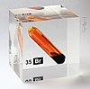

bromine

Definition: Bromine is a chemical element with the symbol Br and atomic number 35. It is a volatile red-brown liquid at room temperature that evaporates readily to form a similarly coloured vapour. Its properties are intermediate between those of chlorine and iodine. Isolated independently by two chemists, Carl Jacob Löwig (in 1825) and Antoine Jérôme Balard (in 1826), its name was derived from the Ancient Greek βρῶμος (bromos) meaning "stench", referring to its sharp and pungent smell.
Source: Wikipedia
Wikipedia Page
Wikidata Page